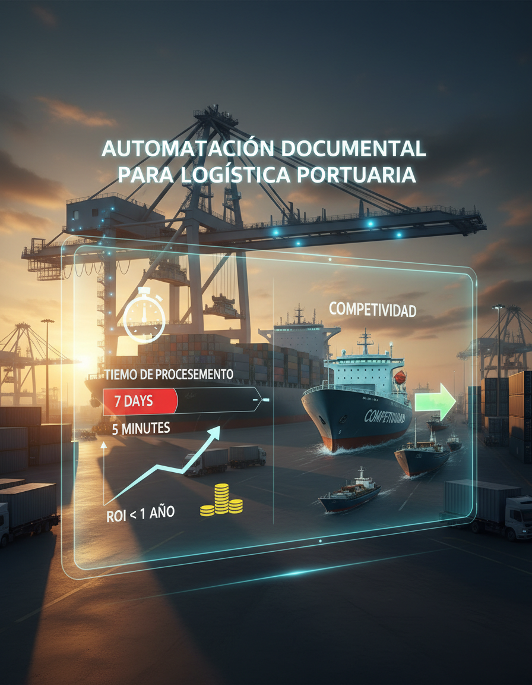

Manufactura
Automatización Documental para Logística Portuaria
Resultado del desarrollo ya implementado
- Reduccion de tiempo de procesamiento de cotizaciones, de 7 dias a 2 minutos.
- Redistribucion de recursos con un enfoque de 100% en estrategia corporativa.
- ROI del proyecto menor a 1 año.
Diferenciador de la solución
- Implementación de IA predictiva combinada con sensores IoT para monitoreo en tiempo real. - Chatgpt corporativo
70%
Reduccion en tiempos
90%
Más eficiencia
$72k
Ahorro anual
